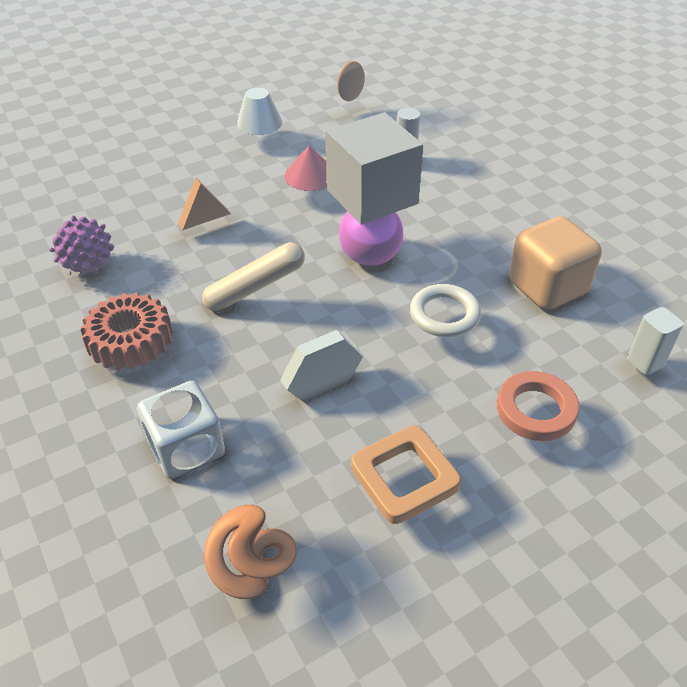

Example on how to do CSG(Constructive Solid Geometry) and signed distance function. It's a common way
to do demo scene.
Inspired from the article of Jamie Wong :
aricle.
All Ice-Blaze Projects

Raymarching algorithm

Shadows with raymarching
Tried an implementation of the shadows with signed distance function. It is simpler than the classical
way with polygons.
Inspired from the article of Inigo Quilez :
article.